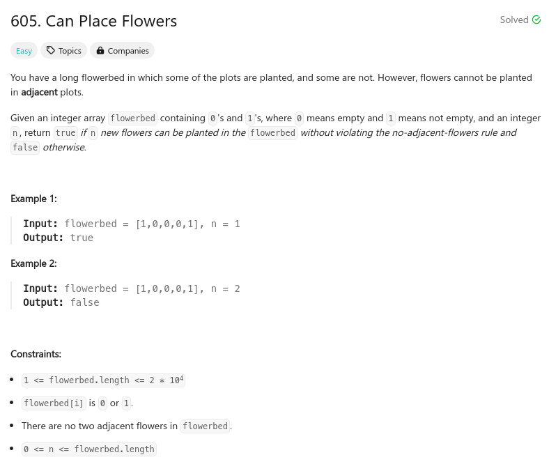

參考資訊：
https://www.cnblogs.com/grandyang/p/6983982.html
題目：

class Solution {
public:
bool canPlaceFlowers(vector<int>& flowerbed, int n) {
flowerbed.insert(flowerbed.begin(), 0);
flowerbed.push_back(0);
for (int i = 1; i < flowerbed.size() - 1; i++) {
if ((flowerbed[i - 1] + flowerbed[i + 0] + flowerbed[i + 1]) == 0) {
n -= 1;
i += 1;
}
}
return n <= 0;
}
};